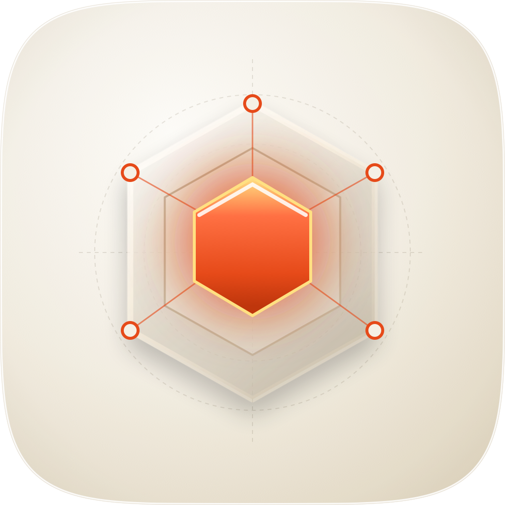
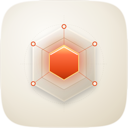
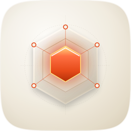
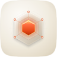

| Take | Renders at 128 / 64 / 48 / 32 / 16 css px, plus 16px magnified | Rubric | Verdict |
|---|---|---|---|
| A · icon.svgLayered SVG Master — SHIPS as tile |
    |
11 / 12 | Selected shipping take. Clean silhouette with strong 16px focal beacon, warm ember lighting, and tactile gel-glass depth. |
| B · icon-engineB.svgArrow geometric engine |
     |
9 / 12 | Good geometry and contrast, but lacks the tactile soft 3D gel-glass depth of the layered master. |
| C · icon.svgVector variant |
    |
10 / 12 | Rich material and lighting, but vector master A retains superior scalability and system tint adaptation. |